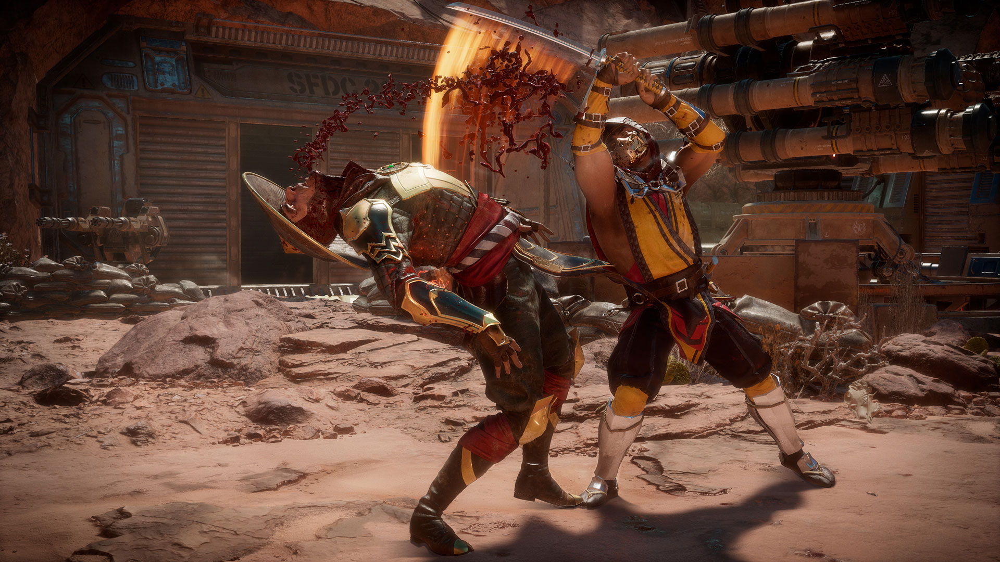
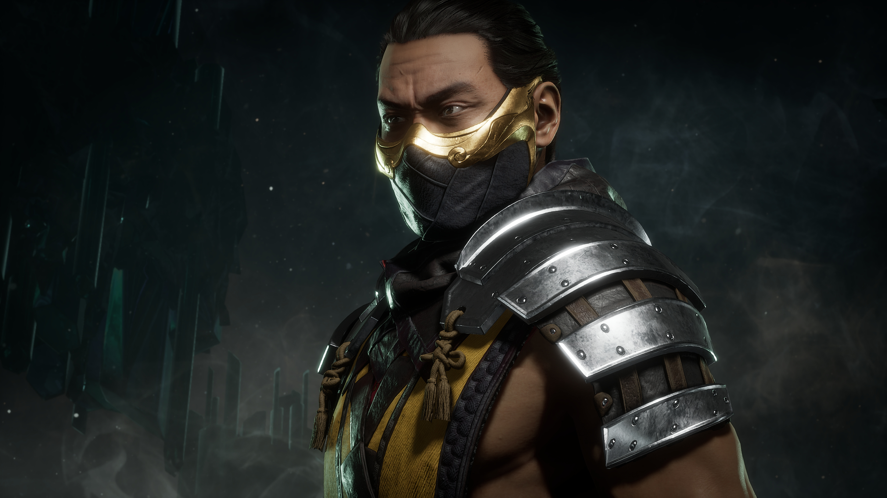
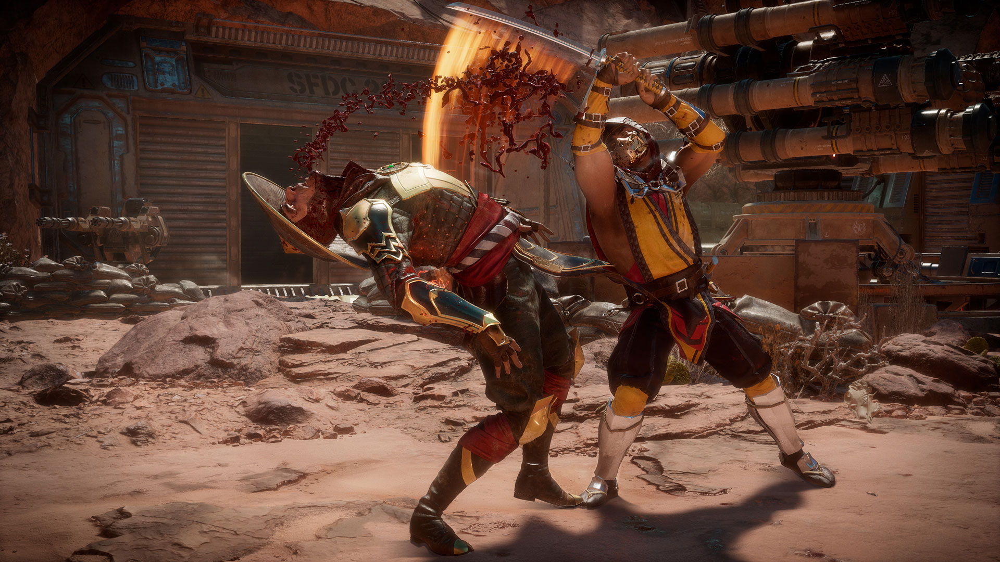
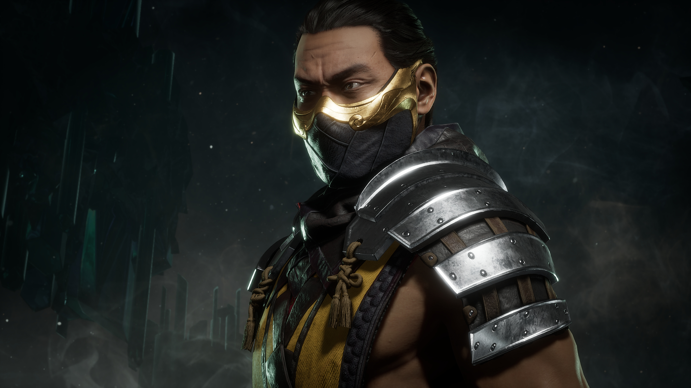

Nuestro analisis:
Juego de lucha decente MK mediocre
El juego es bueno, una historia decente (para quien le guste las historias en este tipo de juegos), infinitas horas en torres, online con buen nivel y todo tipo de jugadores (aunque en liga aveces hay gente que mejor no encontrarse), un tutorial para los nuevos en este tipo de juegos, una kripta bastante buena en mi opinión, también tiene el segundo mejor elenco de personajes de los últimos 3 juegos ( siendo el del 9 el mejor, y el del x el peor), quitando que le faltan Ermac, Reptile y Mileena pero bueno quizás algún día mediante DLC este alguno de estos 3, unos diseños y número de mapas mucho mejor que en el X, en resumen el juego es muy muy bueno a simple vista pero le falta algo que para mí es súper importante en los juegos de lucha y es... LA JUGABILIDAD, este MK es sin duda de los peores de la saga en jugabilidad, no puedes correr como en el x, los dashes no son tan rápidos como en el 9, aveces el personaje se queda "pillado", porque necesitas un timing perfecto, los combos son una MIERD* hablando claro en comparación con el X e incluso el 9, es decir muchas veces dependes del krusing blow y una barra mínimo si quieres hacer un combo que supere los 5 golpes y el 25% de vida, en el x con tan solo una barra ya podías hacer cosas increíbles en muchas ocasiones y con las 3 ni hablemos, y aquí dependes muchas veces del krusing blow que aveces es muy aleatorio que te salga, además que como ya dije se nota "tosco" al moverse para lante y para atrás, para finalidad la crítica, el juego es un muy buen juego en contenido y calidad del mismo, pero en jugabilidad falla bastante parece que en vez de avanzar hemos ido 3 juegos atras en jugabilidad, aún así si eres fan de la saga seguramente no te va a desagradar mucho, y si eres nuevo en este mundillo de los juegos de lucha tampoco creo que te disguste el tema los combos y tal.